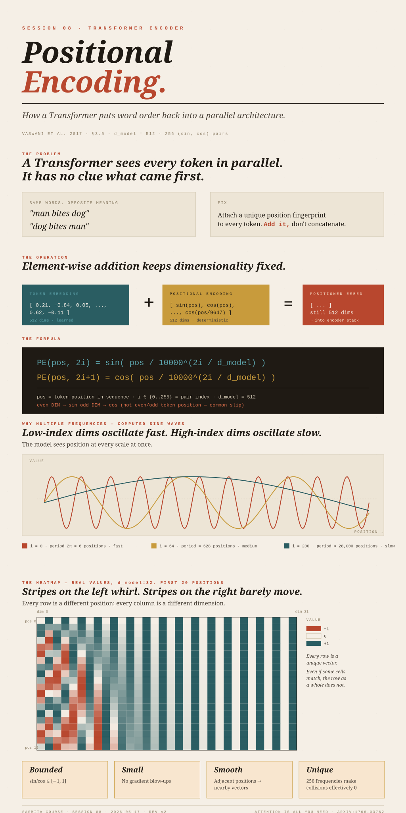

Positional
Encoding.
A Transformer sees every token in parallel. It has no clue what came first. Sine and cosine put order back in — without breaking the math.
Most of the visuals and the "animal didn't cross the street" example trace back to Jay Alammar's Illustrated Transformer. His original positional-encoding figure shows the Tensor2Tensor implementation, which builds the position vector by concatenating a sin half with a cos half (left half = all sin, right half = all cos). The actual paper method — and these notes — interweaves sin and cos column-by-column (even dim = sin, odd dim = cos). Alammar himself added a July 2020 update flagging the difference. So when the lecturer said "concatenate," he was probably thinking of how Alammar's diagram is constructed, not how PE attaches to the embedding. Two different operations, same word.
Where we are in the encoder
One encoder block, in order:
Session 8 is the third step — what that positional encoding actually is, why it has that shape, and how the formula computes it.
The lecturer repeatedly says the position vector is concatenated to the embedding. It isn't — it's added element-wise. The position vector must have the same dimensionality as the token embedding so they can be summed. Addition keeps the vector at
d_model end-to-end; concatenation would double the size at every injection.Vaswani et al. 2017, §3.5 — "the positional encodings have the same dimension d_model as the embeddings, so that the two can be summed." Alammar's July 2020 update confirms the paper interweaves rather than concatenates.
Why integer positions don't work
The most naive scheme: position 0 → 0, position 1 → 1, and so on. This fails for two reasons.
Magnitudes blow up
A long document might have 5,000 tokens. Feeding 5000 into a neural network — alongside word-embedding components that sit around ±1 — wrecks training. Deep networks are extremely sensitive to input scale: large, unbounded inputs make gradients explode and weights skew.
This is why ML pipelines almost always normalize inputs first. The lecturer reached for min-max scaling:
x_scaled = (x − min) / (max − min)The transcript example garbled the arithmetic. The correct version, with min = 1000 sq ft and max = 1500 sq ft:
| x (sq ft) | (x − 1000) / 500 | scaled |
|---|---|---|
| 1000 | 0 / 500 | 0.0 |
| 1100 | 100 / 500 | 0.2 |
| 1500 | 500 / 500 | 1.0 |
Position has to be input-length-independent
A model trained on sequences up to length 100 should still produce a sensible encoding at position 5,000. Integer indexing has no upper bound, so the model has never seen large values during training and can't generalize to them.
Think of it like a rate limiter that expects values in [0, 1] (a percentage). If you start handing it raw request counts in the millions, every downstream calculation derails. ML preprocessing is conceptually the same: normalize before the service consumes the input.
Why binary encoding doesn't work either
Next attempt: encode each position as its binary representation. Position 5 → 0101, position 13 → 1101. This is unique (every integer has a distinct binary form) and bounded (each bit is 0 or 1). But:
- It's not smooth. Adjacent positions can differ in many bits — 7 → 8 flips four bits (
0111→1000). The model can't easily learn "this position is one step after that one" from a representation that jumps around. - Bit width depends on max length. To support up to 216 positions you need 16 bits; up to 220, you need 20 bits. The encoding's size is fixed by a quantity the architect has to commit to up front.
What we want instead is a continuous, smooth function — small step in position, small step in vector. Sine and cosine give exactly that.
The four properties we want
Bounded
Values stay in a fixed range. sin and cos sit in [−1, 1].
Small
Same idea — values near zero, no gradient explosions.
Smooth
Nearby positions get nearby vectors. Distance in position ≈ distance in vector.
Unique
No two positions produce identical full vectors.
Sine and cosine give you bounded, small, and smooth automatically. Uniqueness is what the multi-frequency construction (next chapter) is built for.
Why a single sine wave isn't enough
sin(pos) is periodic with period 2π ≈ 6.28. After roughly six positions, the values start repeating. Two different positions can produce the same number — the encoding isn't unique.
Pairing it with cosine gives (sin(pos), cos(pos)). That pair is unique within one full period, but still repeats after 2π. One pair isn't enough either.
The lecturer's uniqueness insight
Even if a few entries of a 512-dimensional vector happen to coincide between two positions, the full vector is still distinct as long as some entries differ. He used this example:
[0.1, 0.2, 0.3, 0.5] vs [0.1, 0.2, 0.3, 0.6]The first three entries are identical; the fourth differs. The vectors are different. With 512 entries, it would take every single one of them to collide for two positions to be indistinguishable. That's astronomically unlikely if each entry comes from a sine or cosine at a different frequency.
The fix: use many (sin, cos) pairs at different frequencies. If the first pair completes one cycle every 2π positions, the second every ≈20π, the next every ≈200π, and so on. The chance that every pair across all frequencies aligns at two different positions is, for practical purposes, zero.
The formula
The paper defines, for token position pos and pair index i:
PE(pos, 2i+1) = cos( pos / 10000(2i / d_model) ) VASWANI ET AL. 2017 · §3.5
Notation, because the transcript wobbles here:
pos— position of the token in the input sequence (0, 1, 2, …).d_model— total embedding dimension (512 in the paper).i— the pair index, ranging from 0 tod_model/2 − 1. Ford_model = 512, that'si ∈ {0, 1, …, 255}— exactly 256 pairs.2iand2i+1index two adjacent dimensions of the output vector. Dimensions 0 and 1 form pair 0 (i = 0). Dimensions 2 and 3 form pair 1 (i = 1). …Dimensions 510 and 511 form pair 255.
Even dimensions get sine, odd dimensions get cosine. The lecturer phrased this as "even positions get sine" — that's the dimension index inside the position vector, not the token's position in the sentence. Every position gets the same alternation pattern: sin, cos, sin, cos, … across its 512 slots.
The denominator is the wavelength controller
| i | denominator | period (positions) | role |
|---|---|---|---|
| 0 | 100000 = 1 | 2π ≈ 6.28 | fastest oscillation — fine-grained position |
| 128 | 100000.5 = 100 | ≈ 628 | mid-scale |
| 255 | 100000.996 ≈ 9647 | ≈ 60,000 | slowest — coarse-grained position |
Low-index dimensions oscillate fast; high-index dimensions oscillate slowly. The encoding gives the model position information at every scale simultaneously.
Worked example (tiny: d_model = 4)
The lecturer wanted to do a full worked example but postponed it. Here it is for a tiny model where d_model = 4 — so 2 pairs, i ∈ {0, 1}. Compute the encoding for position 1:
| dim | func | i | denom | arg | value |
|---|---|---|---|---|---|
| 0 | sin | 0 | 1 | 1 / 1 = 1 | ≈ 0.8415 |
| 1 | cos | 0 | 1 | 1 | ≈ 0.5403 |
| 2 | sin | 1 | 100 | 1 / 100 = 0.01 | ≈ 0.0100 |
| 3 | cos | 1 | 100 | 0.01 | ≈ 0.99995 |
So PE(pos=1) ≈ [0.8415, 0.5403, 0.0100, 0.99995].
For position 2:
| dim | value |
|---|---|
| 0 (sin 2) | ≈ 0.9093 |
| 1 (cos 2) | ≈ −0.4161 |
| 2 (sin 0.02) | ≈ 0.0200 |
| 3 (cos 0.02) | ≈ 0.9998 |
Two distinct positions, two distinct vectors. Notice the high-index dimensions (slow frequency) barely move between consecutive positions — those are the "global" position channels. The low-index dimensions swing dramatically — those are the "local" position channels. The model gets both.
For the real d_model = 512, repeat with 256 pairs.
The heatmap pattern
The lecturer mentioned twice that "if you plot all the values in a heatmap, you'll see hidden patterns." Here's what he meant.
Stack the PE vectors row-by-row (one row per position) and color-shade each cell by its value (deep terracotta = −1, paper = 0, teal = +1). You get vertical stripes:
- Left-side columns (small
i, fast frequency) — tight, fast-cycling alternation as you scan down positions. The wave completes many full cycles in just a few rows. - Right-side columns (large
i, slow frequency) — almost constant. The wave's period is so long that, within the first few hundred positions, the value barely budges. - The transition from fast to slow is smooth across the dimension axis, because the wavelengths grow as a smooth exponential of
i.
This is the easiest way to see two properties at once: every column is bounded in [−1, 1] (the bounded property), and no two rows are identical (the uniqueness property). The infographic at the end of these notes has a computed version using real values.
Alammar's classic image (the one most lecturers, including this one, end up showing) is rendered from the Tensor2Tensor implementation: sin values fill the left half of each row, cos values fill the right half — you can see a visible seam down the center. The actual paper interweaves sin and cos column-by-column (even dim = sin, odd dim = cos), which produces the alternating-stripe pattern in the infographic below. Both schemes contain the same values, just permuted across dimensions — the model behavior is identical — but the heatmap looks different. This is the most common point of confusion when reading PE visualizations across blog posts.
Add, don't concatenate
After computing both:
embedding(token)— length 512 from the token-embedding lookup.PE(pos)— length 512 from the sin/cos formula.
The encoder forms embedding(token) + PE(pos) element-wise. Result is still 512-dimensional. The same shape flows through every encoder block.
Positional encoding is added once, before the encoder stack. It is not re-added inside each of the 6 encoder layers.
Why 512? (it's a choice, not a law)
d_model = 512 is the hyperparameter the Attention Is All You Need authors picked. Modern models pick other values:
| model | embedding dim |
|---|---|
| Original Transformer (2017) | 512 |
| BERT-base | 768 |
| BERT-large | 1,024 |
| GPT-3 | 12,288 |
| OpenAI text-embedding-3-small | 1,536 |
| OpenAI text-embedding-3-large | 3,072 |
| all-MiniLM-L6-v2 (SBERT) | 384 |
The lecturer mentioned "BERT 356 dimensions" — that's misremembered. BERT-base is 768. The 384-dimensional MiniLM model is the likely confusion.
He also conflated "more dimensions" with "more tokens." More dimensions = wider per-token vector. More tokens = longer sequence. Both cost compute, but they're independent knobs.
Bigger d_model = more capacity for nuance, but quadratic-ish compute and memory cost. The choice is an accuracy-vs-cost trade-off, not a fixed rule.
What the token embedding actually is
The lecturer hedged here — "it's pre-computed, you have an embedding for every English word" then later "no, it's actually a neural network." The honest picture:
- The token embedding is a learned lookup table — a matrix of shape
(vocab_size, d_model). Row k is the embedding for token k. - In the original Transformer, this lookup is trained jointly with the rest of the model on the end task (translation). It is not separately pre-trained the way Word2Vec is.
- "Vocabulary" in modern Transformers means sub-word tokens (BPE, WordPiece, SentencePiece), not English words. ~30k–50k sub-word units is typical.
- During training, the model adjusts these embedding rows via backpropagation, the same way it adjusts every other parameter.
The "mask a word, predict it" framing at the end of the session is masked language modeling — BERT's training objective, not the original Transformer's. The 2017 paper trains on translation (supervised seq2seq). The lecturer's example works as a teaching device, but the procedure is closer to BERT than to either Word2Vec or the 2017 paper.
The token embedding is like a Map<Integer, float[]> loaded at application startup, where the values are learned during a separate "training" deployment. Once shipped, every request looks up the same vectors. Position encoding adds a deterministic per-request decoration on top.
Preview of Session 9 — why attention repeats
The lecturer closed with the canonical example for multi-head attention:
"The animal didn't cross the street because it was too tired."
Humans resolve it → animal instantly. The model has to discover that tired is more associated with animal than with street, and that cross the street binds the verb to the street object, and so on.
Alammar's published attention-head visualization shows that, when encoding it, one head attends most strongly to the animal while another attends to tired — the model's representation of it ends up baking in some of both. That's the point of running attention with multiple heads in parallel.
The paper uses 8 attention heads (multi-head attention with h = 8), and the encoder block is stacked 6 times (N = 6).
The lecturer's casual "9 times" / "11 times" was off. The canonical numbers from Vaswani et al. §3.2.2 are h = 8 heads per attention layer, N = 6 layers in the encoder. One more useful number for next session: the Query / Key / Value vectors inside each head are 64-dim, not 512 — the input is projected down by each head's learned
W_Q/W_K/W_V matrices. 8 heads × 64 dims = 512, which is why the heads concatenate cleanly back to d_model.
What's changed since 2017
The lecturer mentioned in passing that "today there are other approaches." Worth knowing the names exist; you do not need the details for this course:
- Learned absolute positions (BERT, GPT-1/2/3) — same shape as sinusoidal PE but the values are learned parameters, not a closed-form formula. Adds capacity, loses extrapolation beyond trained length.
- Relative position (Shaw et al. 2018, T5) — encode the difference between positions rather than absolute position. Better at length generalization.
- RoPE (Su et al. 2021, used in LLaMA, Mistral, GPT-NeoX) — rotate query and key vectors by an angle proportional to position. Now the most common choice in production LLMs.
- ALiBi (Press et al. 2022) — no positional vectors at all; instead add a fixed bias to attention scores that grows with distance.
If you read a 2024+ model card and don't see sinusoidal positional encoding, this is why.
Interview-level summary
"They won't ask you the formula. They'll ask why sin and cos. Answer: bounded, smooth, small, unique. They'll ask why pairs at different frequencies. Answer: a single wave repeats; many waves at different periods make the combined vector effectively unique."
Keep clearly in head
- Position is added to the embedding (not concatenated).
- Even dimension = sin, odd dimension = cos (not even/odd position in the sentence).
- 256 pairs for
d_model = 512. - sin/cos chosen for bounded + smooth + small + unique.
- Multi-frequency for uniqueness across long sequences.
Don't bother memorizing
The literal 10000^(2i/d_model) denominator. You can re-derive that 10000 was the authors' choice to span wavelengths from 2π (i=0) to ~10000·2π (i=d_model/2), giving multi-scale coverage.
The full picture
Everything above, condensed into one visual — including a computed multi-frequency wave panel and a real-values heatmap. (Standalone file: Session8-PositionalEncoding-infographic.svg.)

- pos
- The token's position in the input sequence — 0, 1, 2, … up to the sequence length.
- i (pair index)
- Indexes which (sin, cos) pair we're computing. Range: 0 to d_model/2 − 1. For d_model = 512, i ∈ {0, …, 255}.
- d_model
- The dimensionality of the token embedding (and positional encoding, and every internal vector). 512 in the original paper; varies by model.
- PE
- Positional Encoding. The vector added to a token's embedding to inject its position into the input.
- masked language modeling (MLM)
- BERT's pre-training objective: hide a token, ask the model to predict it from surrounding context. Different from the original Transformer's seq2seq translation objective.
- BPE / WordPiece / SentencePiece
- Sub-word tokenization schemes used in modern Transformers. Break unknown words into known sub-units instead of OOV failures.
- RoPE
- Rotary Position Embedding. Instead of adding a position vector, rotate query/key vectors by an angle proportional to position. Default in LLaMA, Mistral, and most 2023+ LLMs.